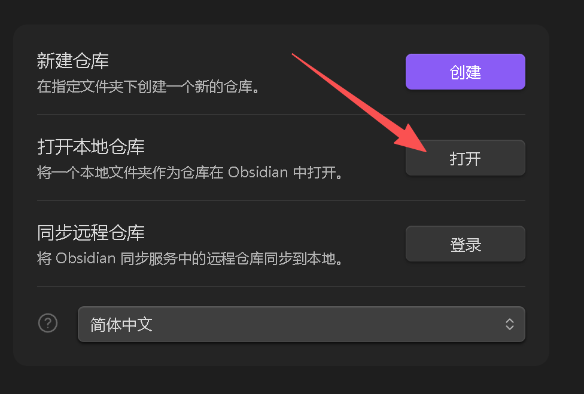
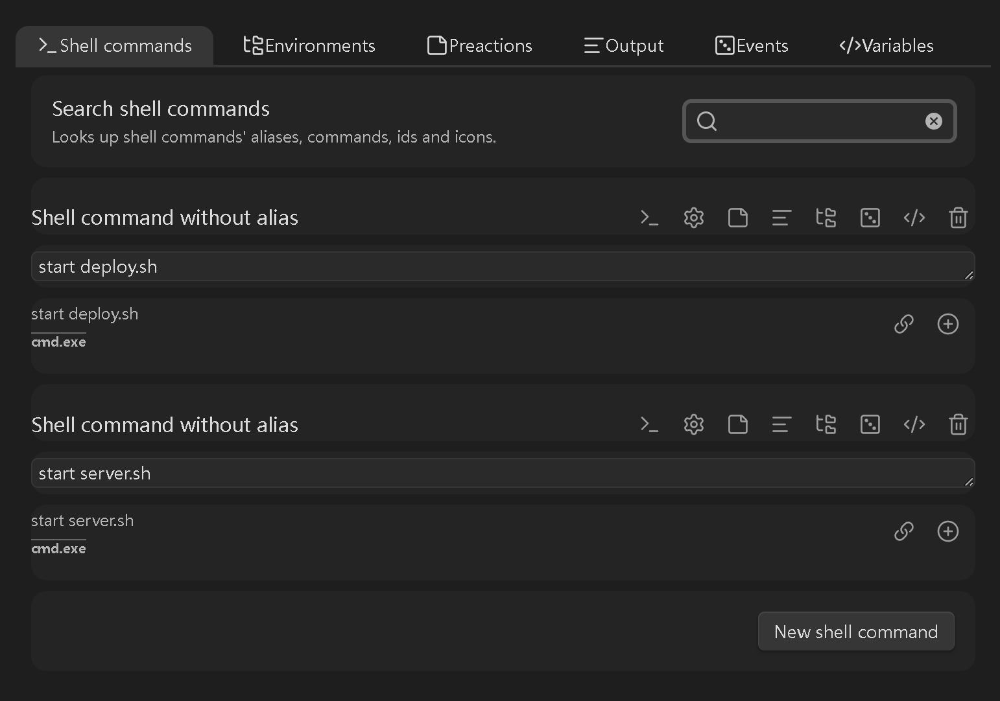
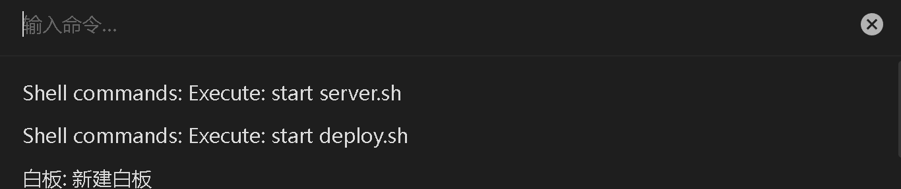
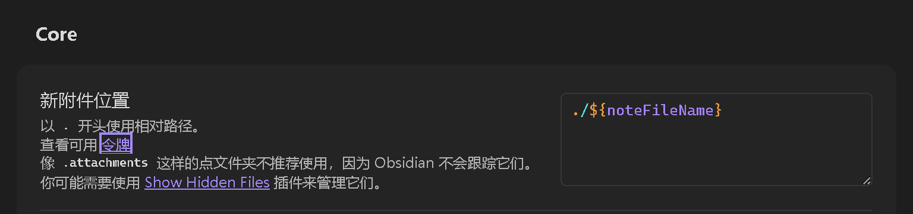
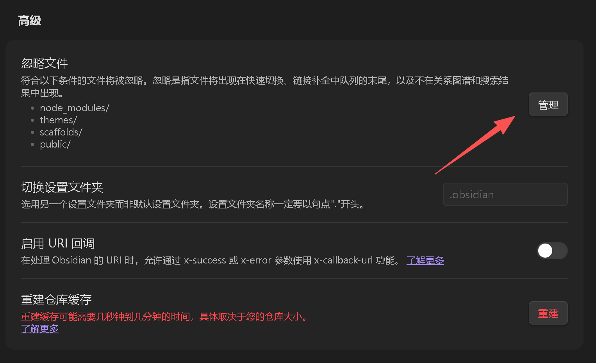

win11配置obsidian+hexo
安装Git与Node.js
- Git的详细配置与安装可见： Git安装全教程（Win11）
选择适合版本的git https://git-scm.com/install/windows
安装完成后，在git中配置你的账户：
1 | git config --global user.name "Your Name" |
- Node.js安装
在 https://nodejs.org/en/download/ 选择Windows Installer（.msi）根据个人需要调整安装选项。
安装完成后在终端中输入：
1 | node -v |
应当正常显示node与npm版本。
安装Hexo
在终端中输入：
1 | npm install -g hexo-cli |
1 | hexo init my-blog/ |
在my-blog目录下：
1 | npm install |
这里也可以直接安装其他主题，根据你想安装的主题而定：Hexo-Themes
1 | npm install hexo-theme-xxxx --save |
安装完成后即可正常使用Hexo。
1 | hexo s |
obsidian配置
- 在 https://obsidian.md/download 下载并安装obsidian
安装完成后打开obsidian选择my-blog作为本地仓库打开：
 - 安装插件
在设置的第三方插件处，关闭安全模式

在社区插件市场安装File Tree Alternative、floating toc、Git、Shell commands、Custom Attachment Location。
- 设置
Shell commands，选择New shell command，添加start deploy.sh和start server.sh

在my-blog目录中添加deploy.sh与server.sh
deploy.sh：
1 | # 生成静态文件 |
server.sh：
1 | # 生成静态文件 |
在命令面板中搜索start deploy.sh或start server.sh即可同步GitHub或本地预览

- 设置Custom Attachment Location，新附件位置填入
./${noteFileName}

- 将博客根目录
_config.yml文件的post_asset_folder值设置为true - 打开设置在文件与连接选项中按图中设置。附件文件夹位置不用填，由Custom Attachment Location插件自动生成。


此时obsidian中插入图片的格式应当为：。
假设博客位置为：source\_posts\text.md则图片应当存储在source\_posts\text\file-xxxxxxxxx.png

说些什么吧！